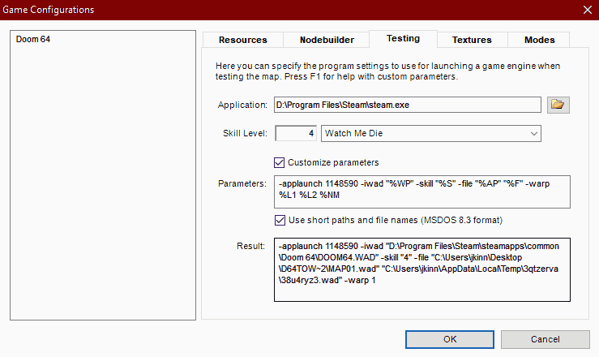

Doom Builder 64 Setup
Doom Builder 64 is the premier map editor for the native Doom 64 map format. It is a heavily modified version of Pascal Van Heiden's Doom Builder by Kaiser, with updates from Iori, and currently maintained by Kovic.
For most engine compatibility, the basic setup is to use the official Doom 64 Remaster to test your maps. In Doom Builder 64 there is a "Game Configuration (F6)" option in the "Tools" menu, which will let you set up Doom 64 and testing parameters. In the "Resources" tab select "Doom 64" at the left, then you can go to "Add resource..." and then find your "doom64.wad" in the Remaster directory. This will make sure every Doom 64 map will load the resources from the Doom 64 IWAD.

Next you will want to set the Doom 64 Remaster as your testing program under the "Testing" tab. The following is for the Steam version of Doom 64, for other programs (like GOG) set the application to the "DOOM64_x64.exe" in your Remaster directory. For the Steam version, in the "Application" field, find the "steam.exe" program. Then check "Customize parameters", and as the very first "Parameter" enter "-applaunch 1148590". This will tell steam to launch the Doom 64 Remaster from DB64 without any warnings and straight into your custom map! Here is the full list of custom parameters: -applaunch 1148590 -iwad "%WP" -skill "%S" -file "%AP" "%F" -warp %L1 %L2 %NM
It is recommended that you test your level on the hardest difficulty, which for Doom 64 is "Watch Me Die" or skill 4. Then afterwards you can balance for lower difficulties by reducing enemies or adding extra items.
Doom 64 EX+ Considerations
If you are building maps using the bonus features of Doom 64 EX+, include the "doom64ex-plus.wad" in the game configuration resources. This will allow the additional enemy graphics to show up in the builder.